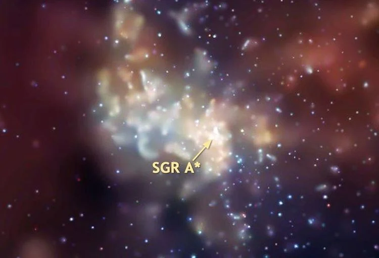

More Spectacular Stellar Views

click image to learn more
The Milky Way Galaxy is a barred spiral galaxy with an estimated visible diameter of 100,000–200,000 light-years. Recent simulations suggest that a dark matter disk, also containing some visible stars, may extend up to a diameter of almost 2 million light-years.

click image to learn more
click image to learn more
Sagittarius A* is a supermassive black hole of 4.100 (± 0.034) million solar masses and is the center of the Milky Way Galaxy. It is located near the border of the constellations Sagittarius and Scorpius, about 5.6° south of the ecliptic, visually close to the Butterfly Cluster (M6) and Shaula.